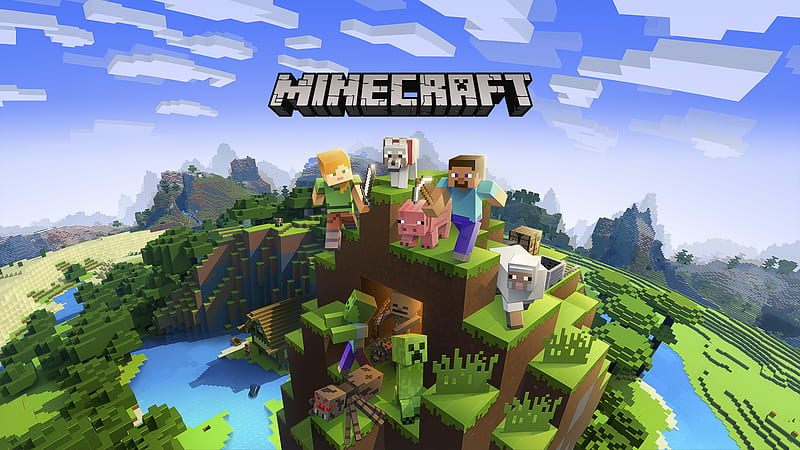

SNAKE GAME

snake game, thsi is a classic video game which is developed in 1970s the objective of game is to safe the snake from the boundries and ctrol the sanke to having food, the length of snake is increase it is depends on the how many food snake eated. NOW so many versions of Snake game is availabe
1-snake rivals
2-snake-io
3-slink io
4-snake Arena
5-blockade
what country is snake game from?
not any specific country is here where the snake game is from but is 1st time developed by the Developer which name Gremlin industries the snake game is gained popularity when is was added by deafult in nokia keypad mobile phones in 1990s and now it become a very populer snake game on Global scale.
what is the famous snake game colled ?
FORTNITE
Q-What is Fortnite ?
fornite is a online game this is a very populer multi media player game which is very populer in united state as well as in some other tier one countrie's in this game battel begin start in between 100 player's this avilabe in so many platfroms like playstation, pc, counsol, nitendo switch and mobile devices. the theam of game is fighting the including elements is Gun,grenades,buildings,and survivals. the each battel is started from sky diving from the plane onto maps, after the landing searching the elements like helmet. waste,guns,bullets,healings, after the full loaded searching the enemy's and start fight with them. the game is very very good if you want to more informations continue with article. Thank you.
is their Fortnite on mobile avilable ?
yes, fortnite mobile is availabe on mobile phone.s it is world wide avilable, if you want to play Fortnite you can download it from your mobile store it can be playstore, and any other aap store, in the mobile version of Fortnite does not have any differance it is same as a pc virsion, but there is a little differance and the differance is graphics differance , but for mobile it is very good, you can Downloading Fortnite in the mobile phone which have minimum 3GB RAM
Can i Download Frotnite ?
yes you can download Fortnite, fortnite is freely available on Playstore,Appstore, as well as on official Website from the september 2021 ,you can download it on any device(pc,mac,Xbox,playstation, nitendoswitch and Mobile Device in running IOS and Andriod.) this is a dynamic app which provide you time to time update. if you want to download the Fortnite your Device have minimum 4GB RAM. may be it can be change in future so stay tune.
Q- Where to download Fortnite
you can download Fortnite from your avilable Appstore ,playstore as well as from the Official Website. it is highly recommended that you can't download Fortnite fromt the Unofficial website it can be harmful for your personal data and personal information. This the official website link you can Dwonlaod and read more about Fortnite from here.CLICK HERE
Can i download fortnite on My mobile ?
yes, you can play Fortnite on your running Andriod and IOS Device which have mininum 4GB RAM you can Download it from your availabe playstore or appstore and from the official website.
Is fortnite for 7 years old ?
NO, it is not for younger then 7 years old kids according to the ESRB(entertainment sfotware rating board) it is only for the 13 years old kids of older than 13 years old kid's. it is the personal recommendation to all our parents that always aware to the content of the game.MINEKRAFT

Q-What is minekraft ?
MINEKRAFT is a very populer gaming in allover the world, so many stramers streamign the game play of minekraft ,minekraft is a sandbox box game the allow the players to build their own dreaming buildings,MINEKRAFT is created by by MARKUS PERSSON and published and Developed by MOJANG STUDIOMINEKRAFT is released in 2011 and now this is one of the best straming ans selling game in world wide, the craze of MINEKRAFT in tier one country is very high, all the age group person like MINEKRAFT.
Q-WAS MINEKRAFT PC FREE??
MINEKRAFT PC is not avilable in free from SEPTEMBER 2021 beccause MINEKRAFT PC is a commercial game so you have purchase the game Subscription for playing, I am highly recommended, that you can download the gaming from the official website if your are download from unofficial website this will be insecure to your personal information, maybe your personal information is leaked or your personal data as well as, so be aware form the unofficial website website, never install the MODE APK TTHANK YouQ- how to get MINEKRAFT free ??
Q- Minekraft free in india ??
Q - minekraft java is free ??
minekraft pc does not avilabe free on but in future we will provide you moded version of Minekraft so stay tune. Q- is Minekraft suitable for 7 years old Kid ?
yes minekraft is suitable for kids, basically it is famous for kids, minekraft is offer a good enviornment where kids explore and build unique ideas and improved their presense of mind and mind ability so it is totally suitable for kids. as well as improve thinkig power. but make sure childern's does not play more 2 hr in a day it is highly chance to adicted with game.
SOLITAIRE
what is solitaire?
solitaire is a single player game, this is 52 playing card game of with their siuts(hearts, diamonds,spades,clubs,) all the cards add in foundation to their suits to ascending order from Ace to King. game is tipically start with random arrangemnts of cards the player make move by rearraging the cards within the ace to king from with their suits the variation of solitaire vary but the basic principle of solitaire is remain samne.What is the name Solitaire maens?
The word solitaire is come fromt the french word "Solitaire" the meaning of solitaire is "alone" which reflect the base of game solitaire is a single player game therire are various version of the solitaire game with different name such as Spider solitaire , etc.the the principal and the base of all solitaire version is remain same.
How to download latest version of solitaire?
Solitaire is freely avilable of playstore or App store you can download is from app store or play store.
Q-problem Solved to download solitaire or not show on your Appstore or playstore ??
Q-where is my free solitaire??
Q-is solitaire free to download??
Follow the instruction's :-1-tap on Download button.
DOWNLOAD
2-install the Taptap applicaion
3-open the Taptap application and tap on search bar and search the , solitaire
4- install the Solitaire which you want to download and enjoy.